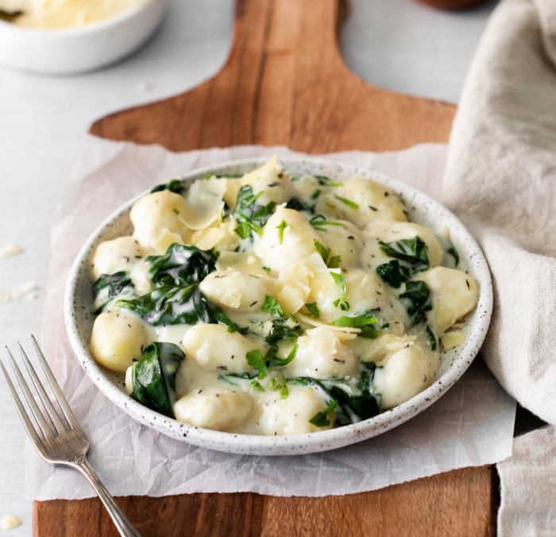

Gnocchi with Creamed Spinach

Gnocchi is a pillowy soft pasta that, if you aren't keeping in your pantry, you should be.
Serve it with a glass of wine and you've got a fancy dinner for two that tastes like it took a lot more work than it actually did.
Ingredients
- 1(19-ounce) package shelf-stable gnocchi
- 1(9-ounce) package frozen cream of spinach, defrosted
- 1/2 c.heavy cream
- 2 oz. Parmesan, grated (about 1/2 cup)
- 1/8 tsp.freshly grated nutmeg Lemon zest, for garnish
Preparation
- In a large pot of salted water, cook gnocchi according to package directions
- Meanwhile, cook cream of spinach and cream in a large, nonstick skillet over medium heat until warm and thickened, 3 to 4 minutes
- Season with salt and pepper
- Add Parmesan, nutmeg, and gnocchi, and stir to coat
- Serve garnished with lemon zest
Related links
Other links